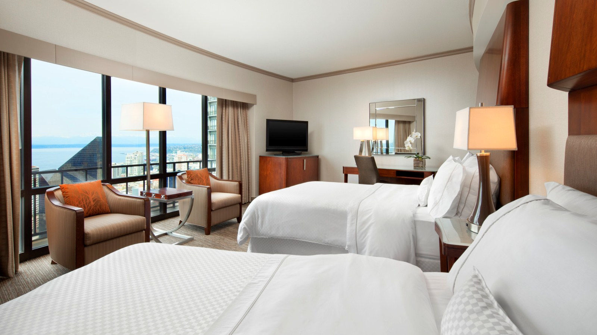
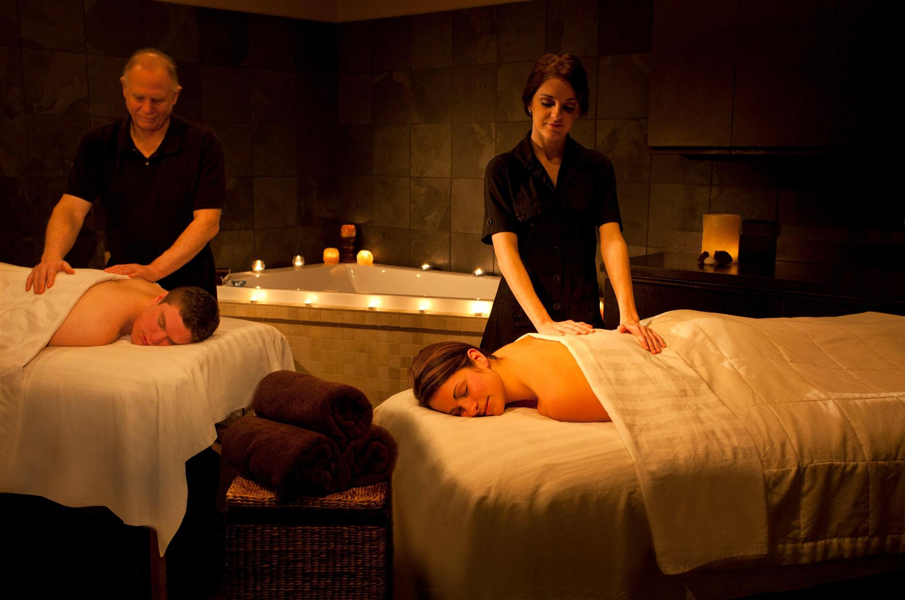

About: The Black Cypress is a friendly restaurant and bar serving Greek and Italian cuisine. Some of the more well known dishes include the roasted chicken with bread salad, seasonal greens and fresh herb pan jus, and the kima pasta with Greek-style meat sauce. Vegetarian options are available at this restaurant. The restaurant highly encourages making a reservation when planning to visit, as they do get busy, especially on the weekends.
About: This hotel is highly rated in comfort, staff responsiveness and SPG recognition. The place includes a burger bistro and a lobby bar. The hotel also includes free in-room internet.

Landmark
Olympic National Park
Location: 3002 Mt. Angeles Rd, Port Angeles, WA 98362
About: This 922,000-arce park features snow-covered mountains, rain forests and the Pacific coastline. The park sprawls across many different unique ecosystems. Mt. Olympus’s summit is popular among many climbers, and the park’s rainforests are great for backpacking and hiking.
About: Although it is a resort, this spa has been said to be the best in the area. They have many amenities such as free wifi, free parking, air conditioning, a beachfront, and a restaurant. It is a fantastic place for couples, for families with children and special events. There are also many events to enjoy nearby such as hikes, boat rides, swimming and more.

Museum
Burke Museum
Location: 17th Ave NE and NE 45th St., Seattle, WA
About: The Burke Museum of Natural History and Culture was founded in 1885. It is the oldest public museum in Washington state and has been designated the State Museum since 1899. The museum holds over 16 million objects(and counting) for education and research.